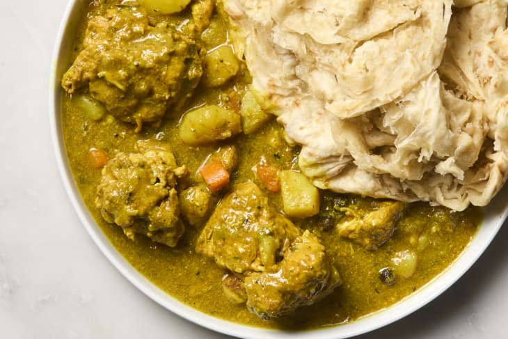

Curry Chicken Recipe
Home

Ingredients
- 15 sprigs fresh thyme
- 1 small red onion
- 3 medium scallions
- 1 small habanero or scotch bonnet pepper
- 2 tablespoons Maggi all-purpose seasoning
- 2 tablespoons plus 1 teaspoon Jamaican curry powder, such as Beta Pac, divided
- 1 teaspoon garlic powder
- 1 teaspoon onion powder
- 1/2 teaspoon ground white pepper
- 1/2 teaspoon freshly ground black pepper
- 4 pounds bone-in chicken pieces
- 2 cloves garlic
- 2 tablespoons vegetable oil
- 2 cups water
- 2 medium white potatoes (about 12 ounces total)
- 1 medium carrot
- 1 chicken bouillon cube, 1 teaspoon chicken bouillon powder, or 1 teaspoon chicken bouillon paste
- 6 allspice berries
- Salt
- Roti or steamed rice, for serving
Steps
- Prepare the following, adding each to the same large bowl as you complete it: Pick the leaves from 15 fresh thyme sprigs
(about 1 tablespoon). Coarsely chop 1 small red onion and separate the pieces. Thinly slice 3 medium scallions
(about 1/3 cup). Trim and thinly slice 1 small habanero or scotch bonnet pepper.
- Add 2 tablespoons Maggi all-purpose seasoning, 2 tablespoons of the Jamaican curry powder,
1 teaspoon garlic powder, 1 teaspoon onion powder, 1/2 teaspoon ground white pepper,
and 1/2 teaspoon black pepper. Stir to combine.
- Cut 4 pounds bone-in chicken pieces into rough 3-inch pieces (halve thighs or drumsticks across the bone).
Add to the marinade and toss to combine, massaging the seasonings into the chicken with your hands
(wear gloves if you can). Cover and let marinate in the refrigerator for at least 1 hour or up to overnight.
- Mince 2 garlic cloves. Heat 2 tablespoons vegetable oil in a large pot or Dutch oven over medium heat until
shimmering. Add the garlic and remaining 1 teaspoon Jamaican curry powder and cook, stirring constantly, until
fragrant, about 15 seconds. Using tongs, transfer the chicken into the pan and reserve the marinade left in the bowl.
Cover and cook for 5 minutes (reduce the heat as needed if the chicken starts to burn).
Uncover and stir the chicken, making sure it is not stuck to the bottom.
- Add 2 cups water to the reserved marinade and stir to combine. Pour the liquid into the pot. Cover and boil
(not simmer), stirring occasionally, until the chicken is cooked through and tender, 30 to 35 minutes.
(The liquid level should always be about halfway up the chicken, add more water as needed.) Meanwhile, peel
and cut 2 medium white potatoes into large dice. Peel and cut 1 medium carrot into medium dice.
- Add the potatoes, carrots, 1 chicken bouillon cube, and 6 allspice berries to the pot. Stir until the bouillon
is dissolved. Taste the sauce and season with salt as needed. Cover and boil until the potatoes are fork tender
and the sauce is thickened to the consistency of thick gravy, 8 to 10 minutes. Serve with roti or steamed rice.